One accountable source
Consolidate valves, tube fittings, PPE, pipe repair and specialist tools through one responsive industrial partner.
AMCOL combines a deep industrial catalogue with practical field services so Massy Wood can source the products, support and response capacity its crews need through every scope.
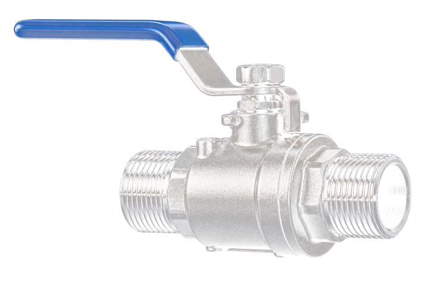
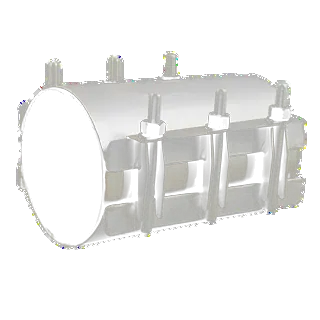
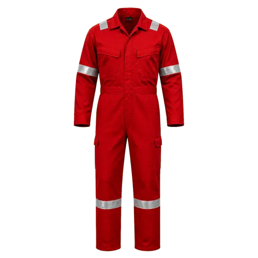
For Massy Wood, the value is not a longer vendor list. It is an integrated relationship that connects certified products, field-ready stock and industrial service capacity around the work already underway.
Consolidate valves, tube fittings, PPE, pipe repair and specialist tools through one responsive industrial partner.
SS316 process products, certified PPE and rapid pipe-repair systems selected for demanding industrial and energy environments.
AMCOL's catalogue extends into rentals, fabrication, coatings, inspection and specialised testing support when a project needs more.
From process plant to port, AMCOL keeps critical products and response capacity close to where Massy Wood crews are operating.
Click any product family to see why it belongs in a Massy Wood work-front. Product imagery is drawn from the AMCOL Industrial Catalog 2026.
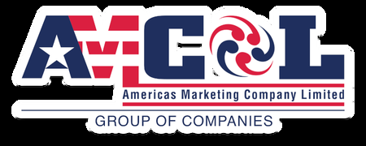
AMCOL can align the item, standard, size and certification package to each Massy Wood work pack - before the crew mobilises.
AMCOL connects Massy Wood to a focused network of industrial manufacturers - from process pumping and asset integrity to electrical, safety, tools and MRO consumables.
Each brand is selected around a practical job: maintain flow, protect crews, repair assets, equip field teams or keep critical stock moving.
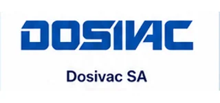
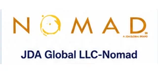
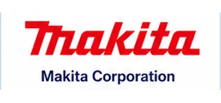
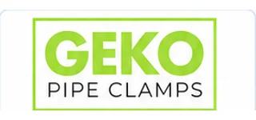
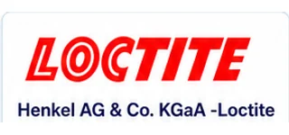
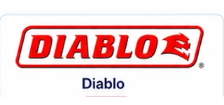
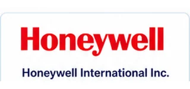
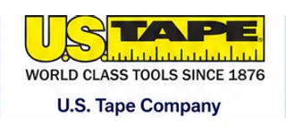
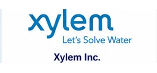
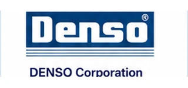
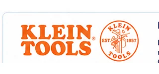
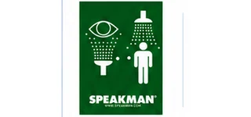
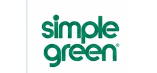
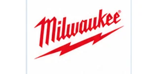
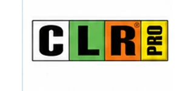
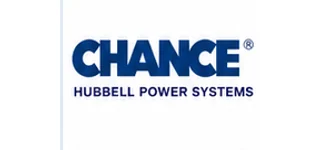
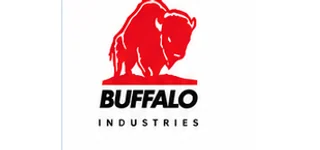
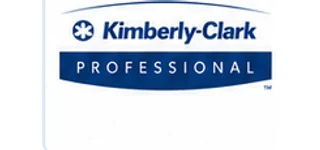
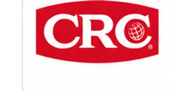
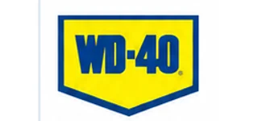
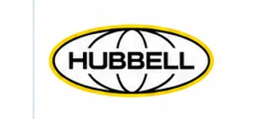
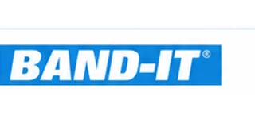
Start with the brands that solve immediate work-front needs, then consolidate replenishment, purchasing and supplier coordination through one AMCOL relationship.
AMCOL's 2026 catalogue positions the company as an industrial solutions partner - adding field, workshop and specialist support around its product range.
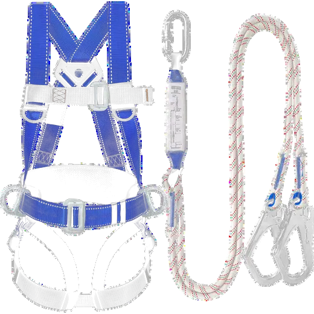
Industrial supportHeavy equipment and equipment-rental support to help resource live projects without owning every asset.
Support for plant maintenance, repair requirements and engineering-led industrial needs.
Fabrication and erection capability, complemented by industrial coating services.
Inspection services, testing and specialised tools to support quality, readiness and execution.
When a scope needs more than a catalogue item, AMCOL's fabrication and coating capability backs the product range.
The strongest partnership starts with the products and services that are used continuously - then expands as results are proven.
High-consumption PPE and rapid-response repair solutions create a practical starting point with visible operational value.
Bring process, hook-up and commissioning items into the same relationship to reduce vendor friction.
Engage AMCOL's service capability when scope complexity, surge capacity or specialist support is required.
For critical work-fronts, the question is not simply where an item is made. It is whether it is available before a delay turns into lost production, added logistics or a compromised turnaround.
versus 8-14 days by sea for a typical imported replenishment cycle.
Local stock, approved alternatives and a first-call partner create a practical buffer between a missing part and a costly operational interruption.
Guyana and Trinidad & Tobago logistics leave little room for a missing part. Local-content readiness and regional coordination turn that exposure into a manageable operating lever.
A missing item during an Atlantic LNG shutdown can cost cargoes, not hours. The supply program needs criticality mapping, substitute rules and a response path before the scope starts.
A $20 stockout can trigger a boat run. Guyana logistics can be more demanding still, which makes local-content readiness and regional coordination an operational lever.
Every imported-only line leaves crews exposed to transit, consolidation and customs variables. AMCOL helps reduce that exposure with locally supported brands and planned replenishment.
VMI turns recurring MRO demand into a controlled service model: define critical items, agree min/max levels, replenish to schedule, and use consignment where it makes commercial sense.
Start with an immediate supply need, then shape a long-term model around stock, kitting, response time and project support.
Vendor-managed or consignment stock, racked and ready, with scheduled replenishment so crews are never waiting on a purchase order.
A consolidated source for targeted product families, aligned to your purchasing process and HSE requirements.
Vendor-managed or consignment fast-movers staged close to the people doing the work, with scheduled replenishment and inventory monitoring.
Certified PPE bundles for new hires, rotations and specialist crews - ready when mobilisation calls.
Product, rental and industrial-service support that flexes for repairs, shutdowns and fast-moving scopes.
Move from catalogue review to a partnership that is visible in the field, without disrupting current operations.
Review priority work-fronts, product standards and replenishment patterns with supply-chain and maintenance leads.
Complete onboarding and build a first-call list of catalogue items, documentation and substitute rules.
Launch a focused PPE, pipe-integrity or valve-and-fitting supply program with agreed service measures.
Extend into broader product families, site stock and value-added industrial services as the relationship proves out.
AMCOL Industrial Solutions Team
americasmarketing@hotmail.com · 868 620-8100 / 329-5200